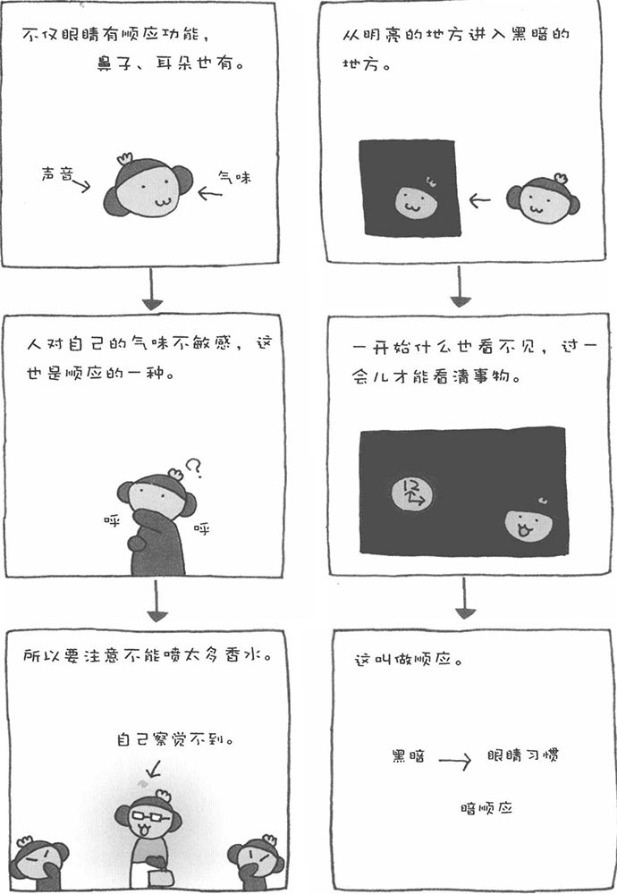

夜里，当我们把电灯关掉后，眼前一片漆黑，暂时什么也看不到。然而，过不了多久，我们就又能看见屋内的事物了。刚进入电影院时，也是如此。这是眼睛适应黑暗环境的一种现象，叫做"暗顺应"。反之，当我们从黑暗的环境进入明亮的环境时，一开始也会觉得耀眼、看不清东西。我们还会不自觉地把眼睛眯成一条缝，但渐渐地就能看清周围的事物了，这叫做"明顺应"所谓顺应，就是改变自己的感觉机能以应对外部的剌激，这是对环境的一种适应性变化。
人类的明顺应比较快，而暗顺应花的时间相对长一点。这是由视网膜内一种叫做视紫质的色素体的功能所决定的。此外，老年人的暗顺应要花更长的时间，而且老年人对光的感度也比较弱。因此，老年人的房间照明最好不要一下子完全变暗，而且夜里，房间里也不要完全一片黑暗。
现实生活中，很多地方都考虑到了人眼的明顺应和暗顺应，比如公路中的隧道。当进入隧道时，光线突然变暗，而出隧道时，又一下子明亮起来。因此，隧道内的照明要经过特殊的设计。一般隧道入口处和出口处的照明要多一些，目的就是使驾驶员能更好地适应光线的改变。这样一来，驾驶员的眼睛就会分阶段接收到不同强度的照明，从而有充分的时间进行暗顺应和明顺应，不会出现突然看不见东西的现象。
如果隧道里没有照明，车辆刚进入隧道时，驾驶员眼前就会一片漆黑，什么也看不见，很容易发生事故。以前，隧道的设计者就没有考虑到这个问题，因而那时的隧道大多没有照明，经常发生交通事故。当时的汽车驾驶员在进入隧道前也会闭上一只眼睛，进行自我调节，以尽快适应黑暗的环境。
